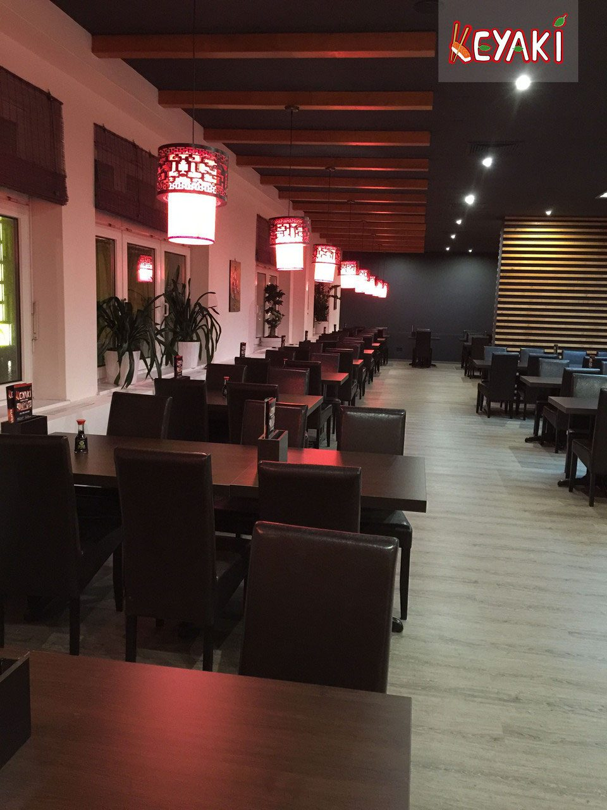
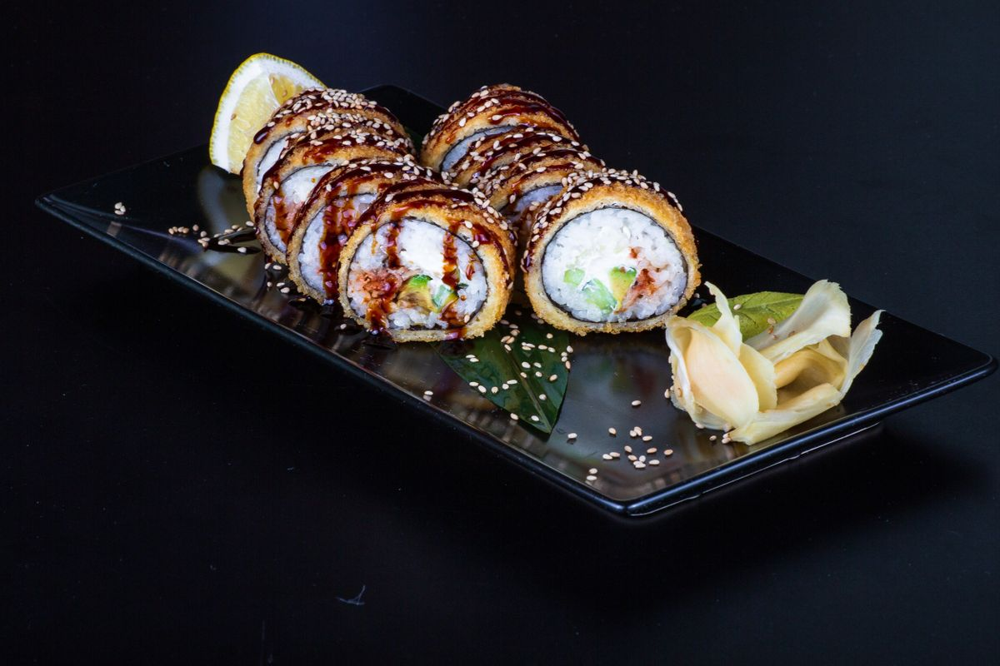
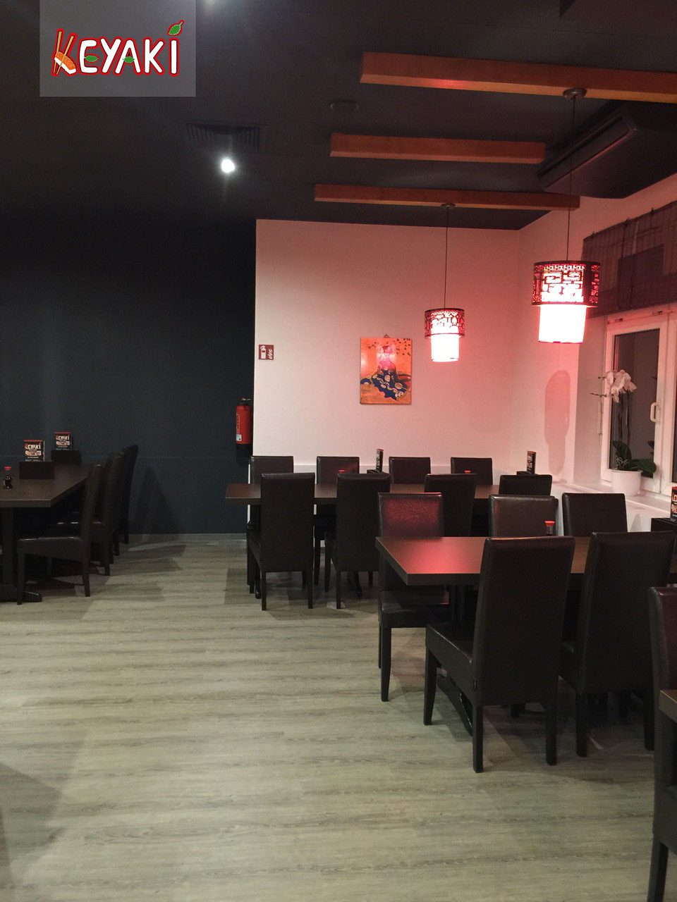

連絡す
Kontakt &
Kontakt &
Anfahrt
Sie möchten einen Tisch reservieren, Gerichte zum Mitnehmen bestellen oder haben eine Frage? Rufen Sie uns an oder senden Sie uns Ihre Anfrage.
連絡する
Anfrage & Reservierung
私たちの所在地
So finden Sie uns
Adresse
Restaurant Keyaki | Sushi & Grill
Marktstr. 249, 47798 Krefeld
Tel.: 02151 - 9756668
Fax: 02151 - 9756669



